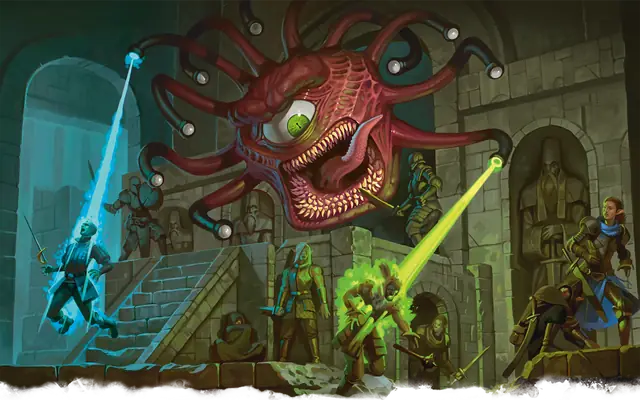

Бехолдер
Beholder
Большая Аберрация, Принципиальная Злая

Класс Защиты 18 Инициатива +12 (22)
Хиты 190 (20к10 + 80)
Скорость 5 футов, Полёта 40 футов (парит)
| мод | спас | ||
|---|---|---|---|
| СИЛ | 16 | +3 | +3 |
| ЛОВ | 14 | +2 | +2 |
| ТЕЛ | 18 | +4 | +9 |
| мод | спас | ||
|---|---|---|---|
| ИНТ | 17 | +3 | +3 |
| МДР | 15 | +2 | +7 |
| ХАР | 17 | +3 | +3 |
Иммунитеты Опрокинутый
Чувства Тёмное зрение 120 футов, пассивное Восприятие 22
Языки Глубинная речь, Подземный
Опасность 13 (10 000 опыта или 11 500 опыта в Логове; БВ +5)
Особенности
Легендарное сопротивление (3/день, или 4/день в Логове). Если бехолдер проваливает спабросок, он может вместо этого преуспеть в нём.
Действия
Мультиатака. Бехолдер использует Лучи из глаз трижды.
Укус. Бросок рукопашной атаки: +8, досягаемость 5 фт. Попадание: 13 (3к6 + 3) Колющего урона.
Лучи из глаз. Бехолдер пускает из глаз выбранный случайным образом из описанных ниже магический луч в цель, которую он видит в пределах 120 футов от себя (бросьте 1к10; повторите бросок, если бехолдер уже использовал этот луч в этом ходу):
1. Луч очарования. Спасбросок Мудрости: Сл 16. Провал: 13 (3к8) Психического урона, и цель Очарована на один час или пока она не получит урон. Успех: Только половина урона.
2. Луч паралича. Спасбросок Телосложения: Сл 16. Провал: Цель Парализована и повторяет спасбросок в конце каждого своего хода, оканчивая этот эффект при успехе. Спустя 1 минуту она автоматически преуспевает в спасброске.
3. Луч ужаса. Спасбросок Мудрости: Сл 16. Провал: 14 (4к6) Психического урона, и цель Испугана до конца своего следующего хода. Успех: Только половина урона.
4. Луч замедления. Спасбросок Телосложения: Сл 16. Провал: 18 (4к8) Некротического урона. До конца следующего хода цели её Скорость уменьшается вдвое, а также она не может совершать Реакции и может в свой ход использовать либо Действие, либо Бонусное действие, но не то и другое одновременно.
5. Луч бессилия. Спасбросок Телосложения: Сл 16. Провал: 13 (3к8) урона Ядом, и цель Отравлена до конца своего следующего хода. Пока цель Отравлена, она не может восстанавливать Хиты. Успех: Только половина урона.
6. Луч телекинеза. Спасбросок Силы: Сл 16 (если цель — существо Громадного размера, она автоматически преуспевает в спасброске). Провал: Бехолдер перемещает цель на расстояние до 30 футов в любом направлении. Цель Опутана до начала следующего хода бехолдера или пока бехолдер не окажется Недееспособен. При помощи этого луча бехолдер может совершать аккуратно взаимодействовать с объектами, например манипулировать простым инструментом и открывать двери или контейнеры.
7. Луч сна. Спасбросок Мудрости: Сл 16 (если цель — Конструкт или Нежить, она автоматически преуспевает в спасброске). Провал: Цель Бессознательна на 1 минуту. Состояние прекращается, если цель получит урон или существо в пределах 5 футов от цели действием разбудит её.
8. Луч окаменения. Спасбросок Телосложения: Сл 16. Первый провал: Цель Опутана и повторяет спасбросок в конце своего следующего хода, если всё ещё Опутана. При успехе эффект для неё прекращается Второй провал: Цель становится Окаменевшей вместо Опутанной.
9. Луч дезинтеграции. Спасбросок Ловкости: Сл 16. Провал: 36 (8к8) Силового урона. Если цель — немагический объект или творение магической силы, этот луч дезинтегрирует её часть объёмом с 10-футовый Куб. Успех: Только половина урона Провал или успех: Если цель — существо и этот луч уменьшает её Хиты до 0, она рассыпается в пыль.
10. Луч смерти. Спасбросок Ловкости: Сл 16. Провал: 55 (10к10) Некротического урона. Успех: Только половина урона. Провал или успех: Цель умирает, если луч уменьшает её Хиты до 0.
Бонусные действия
Конус антимагии. Центральный глаз бехолдера создаёт волну антимагии в 150-футовом Конусе. До начала следующего хода бехолдера эта область действует как заклинание Поле антимагии и работает даже против Лучей из глаз самого бехолдера.
Легендарные действия
У этого существа есть 3 использования Легендарных действий (или 4 использования в его Логове); оно может немедленно после окончания хода другого существа потратить одно использование, чтобы совершить одно из следующих действий. Существо восполняет все потраченные использования в начале каждого своего хода.
Чавк-чавк. Бехолдер совершает две атаки Укусом.
Взор. Бехолдер использует Лучи из глаз.
Бонус мастерства +5
Среда обитания Подземье
Сокровища Магические
Бехолдер
Знаменитый многоглазый тиран
Бехолдеры (или око-тираны) — одни из самых знаменитых обитателей Подземья. В мультивселенной немного существ, вызывающих столь сильное отвращение и ужас, как эти маниакальные твари.
Отличительная черта бехолдера — его шарообразное тело, на котором выделяются гигантская пасть и огромное центральное око. Его облик дополняют десять стебельков с небольшими глазами, каждый из которых обладает магической способностью. Центральное око может нейтрализовать магию, а остальные окуляры — испускать лучи с разнообразными смертельными эффектами: существа могут превратиться в камень, обратиться в прах, мгновенно умереть и многое другое.
Разум бехолдеров абсолютно непостижим. Многие из них демонстрируют параноидальные, нарциссические и сумасбродные наклонности, а мотивы их действий остаются загадкой для всех. Некоторые бехолдеры предпочитают одиночество, другие — компанию ничтожных слуг.
Есть среди них и те, кто преследует грандиозные цели: они создают армии приспешников, чтобы оказывать влияние на организации, поселения или целые народы Подземья, а иногда даже поверхности.
Бехолдеры ненавидят других представителей своего вида. Каждый из них считает себя эталоном физических и интеллектуальных способностей, а всех остальных бехолдеров — недостойными соперниками, которых нужно подчинить или уничтожить. Такие противостояния могут тянуться десятилетиями и привести к разрушению огромных подземных территорий.
Бехолдеры представляют серьёзную опасность для искателей приключений, часто сталкиваясь с ними в загадочных развалинах и местах сосредоточения великой магии. Многие из этих Аберраций любят коллекционировать магические предметы и окаменевшие тела поверженных героев, а также выставлять эти трофеи напоказ.
Логова бехолдеров
Бехолдеры скрываются в проложенных при помощи лучей из глаз лабиринтах пещер Подземья или в созданных их приспешниками логовах.
Местность, в которой находится логово бехолдера, изменяется из-за его присутствия, что создаёт следующие эффекты:
• Скопофобия. Существа в пределах 1 мили от логова чувствуют, что за ними наблюдают. Любое существо, кроме бехолдера и его союзников, которое завершает Короткий отдых в пределах 1 мили от логова, должно совершить спасбросок Мудрости Сл 13; при провале оно не получает преимущества от этого отдыха.
• Искажённая местность. Вблизи логова случаются небольшие искажения реальности. Любое существо, кроме бехолдера и его союзников, которое совершает Тест к20 в пределах 1 мили от логова и выбрасывает «1», Опрокидывается.
Если бехолдер умирает или перемещает своё логово в другое место, все эти эффекты мгновенно исчезают.